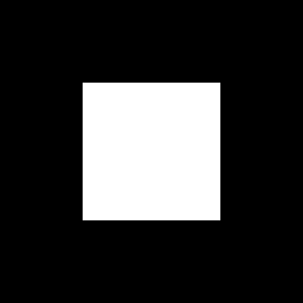
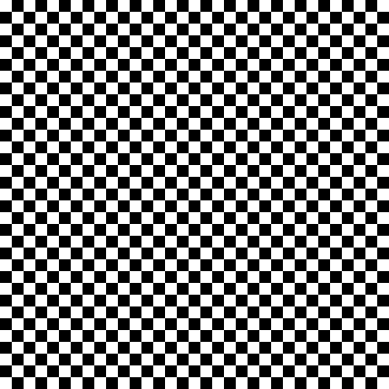
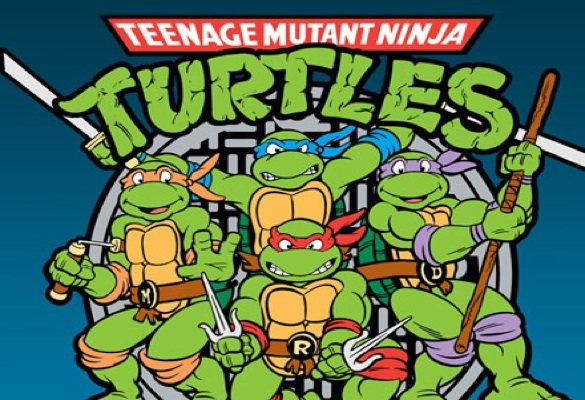
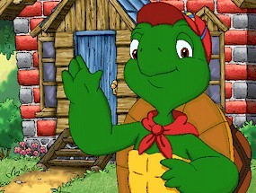

NetLogo JEDI Training Session #1
January 18th 2018Paul Chapron - Sebastien Rey-Coyrehourcq

Prologue
Everything you need to know is at https://ccl.northwestern.edu/netlogo/docs/
Training material (including models) : https://github.com/ISCPIF/JEDI
Training material greatly inspired from Alan G. Isaac introduction to Netlogo Programming
https://subversion.american.edu/aisaac/notes/netlogo-basics.xhtml
https://subversion.american.edu/aisaac/notes/netlogo-intro.xhtml
Prologue part 2
Always keep a tab with the Netlogo Dictionnary https://ccl.northwestern.edu/netlogo/docs/dictionary.html
Outline
- What is Netlogo ?
- A world of Agents
- First steps
- Patches
- Turtles
- Networks
- Interactions
- Inputs / Outputs
- Extensions
What is NetLogo ?
- A programming language
- A toolkit
- An Integrated Development Environment
for Agent Based Models (ABM)
ABM
- Entities
- Environment
- Interactions

You tell entities what to do and see what happens.
ABM
- Entities
- Environment
- Interactions

You describe how entities interact in and with their environment, and observe the resulting phenomena.
ABM
- Entities
- Environment
- Interactions

You program the behavior of software "agents", all operating independently.
It allows to explore the connection between the micro-level behavior of individuals and the macro-level patterns emerging from their interaction.
Netlogo is good for you
- Suited for modeling complex systems
- Simplicity of use
- Simplicity of language
- Clear extensive documentation
- Bundled with a lot of models
- Multi-platforms

Various environments for agents


sources : giphy.com , google images and http://www.cs.us.es/~fsancho/?e=137
Outline
- What is Netlogo ?
- A world of Agents
- First steps
- Patches
- Turtles
- Networks
- Interactions
- Inputs / Outputs
- Extensions
A World of Agents
Pretty much everything is an agent
- Turtles: Mobile Agents
- Patches: Discrete surface units of the World, location of turtles
- Links: Edges of a graph connecting turtles
- The Observer: the meta-agent that rules the world or Netlogo
Building an ABM model
is defining- the world characteristics (e.g. size)
- Global variables (e.g. temperature)
- Agents (turtles) variables (e.g. age, size)
- the behavior of turtles
- Inputs (e.g. parameters)
- Outputs (e.g. monitors)
Outline
- What is Netlogo ?
- A world of Agents
- First steps
- Patches
- Turtles
- Networks
- Interactions
- Inputs / Outputs
- Extensions
Netlogo GUI
- Interface Panel
- Info Panel
- Code Panel
First steps
Open an existing model and play around with it
OR
Create the first model from scratch
Existing models
- File => Models Library. Pick one.
- Mess with buttons, sliders & observe consequences on behavior
- Look at the Info Tab
- Look at The Code
- Fire
- Mousetraps
- Wolf Sheep Predation
- Life
- Fireworks
- Flocking
- Moths
- Preferential Attachment
- Sunflower
- Game of Life
- Patch Clusters Example
- Bounce Example
- Hatch Example
- Network Example
Model from scratch : Code
- Procedure setup : clear everything and create some turtles (20)
- Procedure move : ask the turtles to move forward (1 unit)
to setup
clear-all
create-turtles 20
end
to move
ask turtles [forward 1]
end
Model from scratch : Interface
Add a button (right click), type setup in the commands section
Add a button, type move in the commands section
Notice the colors in the code:
greenish for reserved keywords ()
blue for commands
violet for everything built-in : agents default variables, functions, agentsets
orange for hard-coded values
grey for comments
black for the name of things you declare : variables , procedures
Editing the Interface
- Interface panel
- Select / move / edit / delete stuff with right click
- World characteristics via the Settings Button
- Mind the naming of the elements
Adding stuff in the GUI : Inputs
- Buttons: to call procedures
- Sliders: to define a global numeric variable in a domain
- Switch: to define a boolean global variable
- Chooser: to define a global variable among a list of choices
- Input: for user Input
- (Note: text zone)
Adding stuff in the GUI : Outputs
- Monitors: display value from a reporter (variable, procedure)
- Plots: shows data
- Output: scrolling text area with logs
Outline
- What is Netlogo ?
- A world of Agents
- First steps
- Patches
- Turtles
- Networks
- Interactions
- Inputs / Outputs
- Extensions
- automatically created at start up
- laid out in a rectangular grid
- centered at integer locations
- immobile
- identified by a fixed location : No ids (e.g. patch -5 8 )
- colored in black by default
- World default size : 33 patches wide and 33 patches high
Trial #1
How to do that 
asking patches to turn white ?
Trial #1 Tips
Patches have built-in variables :- pxcor the x-coordinate of the patch
- pycor the y-coordinate of the patch
- pcolor the color of the patch
Try :
ask patches [ set pcolor white ]
Trial #1 Learnings
- ask tell the agents what to do
- Syntax : ask some-agents [do-something]
- set changes the value of a variable
- Syntax :
set my-variable valueTrial #1 Tips
Patches is a set (of patches)
Sets elements can be selected by providing a boolean condition via the keyword with.
Syntax :my-set with [my-condition]
Try:ask patches with [pxcor > 0 ] [ set pcolor white ]Trial #1 solution
Look at the model Dessin_patches.nlogo and its code.Trial #1 Learnings
Patches have built-in variables :- pxcor the x-coordinate of the patch
- pycor the y-coordinate of the patch
- pcolor the color of the patch (black by default)
- plabel the label of the patch (empty by default)
- plabelcolor the color of the patch (white by default)
Look at the model patches.nlogo to display coordinates as labels or display coordinates as colors shades.Going further with patches
Patches can have their own attributes, declared at the beginning of the code :
patches-own [my-patch-attribute1 my-patch-attribute2]
Patches are agents, and can interact with the others : patches, turtles. eg
clear-all ask patches [sprout 1]
Look at the patches section of the Netlogo dictionnary, the turtle_patch_interaction.nlogo model , or the Diffusion_on_patches.nlogo model
Outline
- What is Netlogo ?
- A world of Agents
- First steps
- Patches
- Turtles
- Networks
- Interactions
- Inputs / Outputs
- Extensions
Turtles
 Turtles are: - user created (not automatically created at start up)
- located at floating-point locations within the dimensions of the world : attribute xcor and ycor
- mobile
- identified by the order of creation: attribute who
- have a heading attribute (angle)
Visual display:
- colored, at random by default. attribute color
- displayed in the model’s Graphics Window
- drawn on top of the patches
- can draw using pen
TMNT
turtles-own [name age genome skill] create 4 [ set age 12 + random 4 set skill "ninja" set genome "mutant" ] ask turtle 0 [ set name "Leonardo" set color blue ] ask turtle 1 [ set name "Raphaël" set color red ] ask turtle 2 [ set name "Michelangelo" set color orange ] ask turtle 3 [ set name "Donatello" set color violet ]Trial #2
Setup:
Create n turtles randomly located
Go:
Random walk (i.e. make them move randomly).
No teleport !Trial #2 Hints
Location of turtles is achieved by setting their xcor and ycor attributes.
Random turtles locations are built-in : random-xcor and random-ycor
Eitherset xcor random-xcor set ycor random-ycor
or
setxy random-xcor yrandom-cor
Trial #2 Hints
Movement is combination of rotation and translation
Rotation is either changing the heading attribute or rotate left or right by a number of degrees (built in commands)
ask turtle 42 [right 45 ]
or
ask turtle 42 [ set heading heading + 45]
heading = angle between 0 and 360
North is 0Trial #2 Hints
Movement is combination of rotation and translation
Translation is moving forward or backward by a number of steps (built in commands) in the direction of turtle heading
ask turtle 42 [forward 2.5]
or, use jump (which is basically teleporting)
ask turtle 42 [ repeat 10 jump 0.25]
Moving is teleporting smoothly (only in a discrete world !)Trial #2 Solution
Look at the random-walk.nlogo model
Drawing tracks is achieved by the command pen-down
Trial #2 Learnings
- Turtles are mobile agents
- Turtles can have their own user-defined attributes
- Turtles can be translated and rotated
Outline
- What is Netlogo ?
- A world of Agents
- First steps
- Patches
- Turtles
- Networks
- Interactions
- Inputs / Outputs
- Extensions
Networks in netlogo
- Turtles are nodes
- Links are agents connecting nodes
- that's all
Links
- Directed or undirected
- Can have their own attributes (e.g. weight)
- have acces to their nodes :
end1 and end2 or both-ends
Links creation
create-link-to
create-links-to
create-link-from
create-links-from
create-link-with
create-links-with
Example :
ask turtles[ create-link-to one-of other turtles ] end
Things are getting harder
To understand:create-link-to one-of other turtles
We must introduce agentsetsAgentsets
Agentsets are sets of agents
Agentsets are used to define things like "some agents", "agents with this and that", "agent do something to each other"
Common agentsets :- turtles, patches , links
- turtles-here, turtle-on, neighbors
- link-neighbors, in-link-neighbors, out-link-neighbors
Agentsets
Various set operations, according to reporters or notone-of n-of other with [reporter] of max-one-of [reporter] max-n-of [reporter] sort-on[reporter] count member? any? all?
Back to Networks
Fully connected undirected network :
ask turtles [create-links-with other turtles]
Random undirected network , n nodes, n links:
ask turtles [create-links-with one-of other turtles]
Constant degree (4) random network:
ask turtles [create-links-with n-of 4 other turtles]
Trial #3
Build a preferential attachment network generator.
Starting from an inital network, nodes are added, and preferentially attached to high degree nodes
to setup clear-all set-defaukt-shapes turtles "circle" crt 20 \[ create-links-with n-of (1 + random 3) other turtles \] end
Resist the urge to copy the code from the model libraryTrial #3 hints
Degree is obtained by counting neighbors
Weighted probability draw is tricky (look on google with "weighted probabilty draw netlogo")
Observe and admire the simplicity of the model library solution. WHy does it work ?A must-read
The doc on the network extension https://ccl.northwestern.edu/netlogo/docs/nw.htmlOutline
- What is Netlogo ?
- A world of Agents
- First steps
- Patches
- Turtles
- Networks
- Interactions
- Inputs / Outputs
- Extensions
Introduction
Look at the model turtle_patch_interaction.nlogo where turtles wander in the world, consuming grass of the patches
patches are affected by turtles (color)
turtles are affected by patches around them
Trial #4
Add interaction to the Trial #2
Interaction:
When two turtles are close, their colors are set to the mean of their own previous color.Trial #4 hints
"Select close turtles" means defining what is "close" : a threshold of distance
- By their common location patches (implicit threshold : patch size)
- By their separating distance (explicit threshold)
Trial #4 hints
One way to obtain the set of turtles at a given distance Dist of a turtle using selection (with)
ask turtles [ ask turtles with [distance self < Dist] [ average your color with color of self ] ]Also :
self means "me" , the agent called
check out in-radius built-in procedure.Agentsets Introduction : nested asks
You can nest the ask commands.
YOU ask agents to ask SOME OTHERS to do something
ask turtles [
do this ask other turtles [ do that ] ]]
other = every element except the caller
Agensets Introduction : nested asks
You can nest the ask commands.
YOU ask agents to ask SOME OTHERS to do something
ask turtles [
do this ask other turtles []do that] ]
other = every element except the caller
How many times "this" is done ?
How many times "that" is done ? (for n turtles)Interaction insights
netlogo is perfect for reactive agents e.g.:ask turtles [ check stimuli ifelse test [...] ]
As a modeler, you don't check yourself the world state and update it, you describe only the agents behaviors and let the world evolve on its own.Going further with turtles
Breeds allow to specialize turtles
breed [ sheep a-sheep ] breed [ wolves wolf ] sheep-own [wool] wolves-own [maw]
Breeds are called like agents :ask wolf 0 [ growl ] ask sheep[ say "Baaa"]
References :
https://subversion.american.edu/aisaac/notes/netlogo-basics.xhtml https://subversion.american.edu/aisaac/notes/netlogo-intro.xhtml